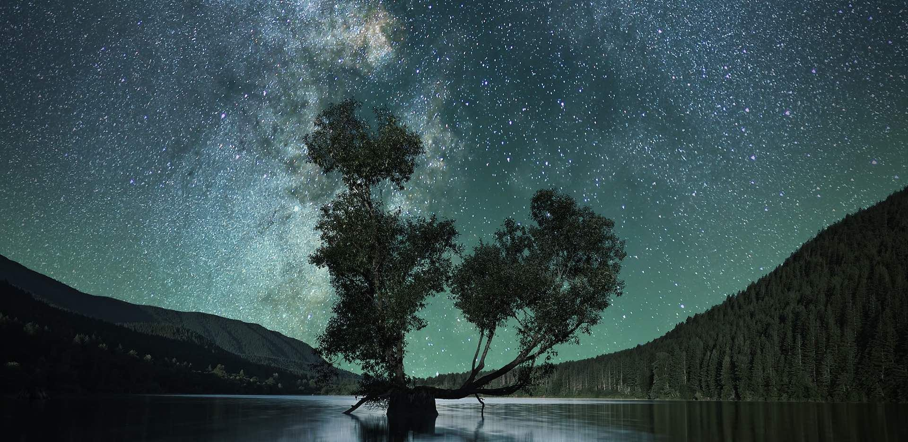

In the Redwood forest...
I realized the importance of photosynthesis.

Breathing air in the forest
I felt something different. A feeling of myself as a part of the forests.
The air - oxygen - I didn't realize it was always around me.
What would it be like without them - forests, ferns, mosses, grasses, and all the green lives?
What if they are not there?
What happens if they are not doing photosynthesis - the source of oxygen that we are breathing in right now?
Well... we are not alive, are we? We are all dependent on photosynthesis. Without it, we are not here.
Breathing air in the Redwood forests made me realize this simple fact -
also made me realize that I want to study more about it.
I didn't know anything about photosynthesis although it is important for me and for everyone. If I studied more about photosynthesis,
I would be able to tell more about it... It was the year of 2000.
The trail in the forest has led me here in Berkeley, conducting research on photosynthesis.
There are still so many more we don't know how it does an essential chemical reaction for all of us.
Looking at sky and beyond space... Still seeing Photosynthesis.

We need it wherever we go
Light is vital for photosynthesis. It uses the energy from light (how amazing!).
Looking at the stars in the sky, isn't it delightful to wonder if
photosynthesis is happening somewhere out there using the light from these stars?
In the universe, hydrogen (H), oxygen (O), carbon (C), and sulfur (S) are common elements, and
that's all you need to start photosynthesis in some forms.
It is absolutely a miracle that photosynthesis happened in Earth's early history (~3.5 billion years ago!).
But, if it happened here, photosynthesis is possibly happening on other planets like Earth somewhere in space!
As humanity is seeking space exploration, we will need photosynthesis with us.
Not only for oxygen, but
we also need it for materials and food sources that are dependent on photosynthesis.
We still don't know how photosynthetic organisms can survive in microgravity environments.
So, research in physiology of plants and microalgae is essential to understand how to optimize productivity in such environments.
Despite all remarkable resources that photosynthetic organisms can provide,
it is sad to recognize that humanity has not been doing a good job maintaining them here on Earth.
Light from the Sun is unlimited (for another couple of billion years), but
the resources and the lives of photosynthetic organisms are definitely not.
If we use them up, and if they are extinct because of us, that's it. We cannot regain another billion years of processes all at once.
If we look for going out of space, we also need to look for the way to bring photosynthesis with us.